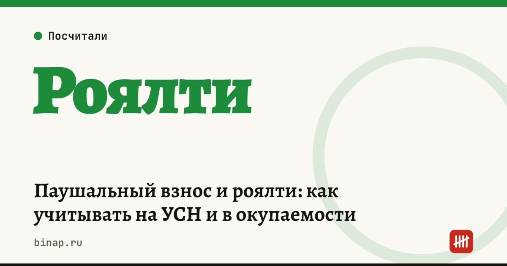

Паушальный взнос и роялти: как учитывать на УСН и в окупаемости

Паушальный взнос и роялти — главные платежи франчайзера, и от налогового режима франчайзи зависит, уменьшают ли они налог. На УСН «доходы» 6% — нет. На УСН «доходы минус расходы» 15% платежи за право использовать товарный знак и ноу-хау можно учесть в расходах (подп. 32 п. 1 ст. 346.16 НК), если договор оформлен правильно. Поэтому объект УСН для франшизы выбирают с учётом роялти.
Коротко
- Паушальный взнос — разовый платёж за вход в сеть, роялти — регулярный, процент от выручки или фиксированная сумма.
- На УСН «доходы» эти платежи налог не уменьшают.
- На УСН «доходы минус расходы» их можно учесть как платежи за право использования интеллектуальной собственности.
- Как признавать паушальный взнос — сразу или равномерно в течение срока договора — уточните у бухгалтера.
- Договор коммерческой концессии в части товарного знака регистрируется в Роспатенте — без регистрации право не считается предоставленным, и учесть расходы будет сложнее.
Сроки, изменения и разборы для ИП и самозанятых — каждое утро в Telegram и MAX. Подпишитесь, чтобы не пропустить.
Расчёт: какой объект УСН выгоднее
Расчёт редакции, цифры условные. Выручка точки — 10 800 000 ₽ в год, себестоимость — 35% (3 780 000 ₽), роялти 5% — 540 000 ₽, маркетинговый сбор 2% — 216 000 ₽, аренда, зарплата и прочие расходы — 5 040 000 ₽.
| УСН 6% | УСН 15% | |
|---|---|---|
| База | 10 800 000 ₽ | 10 800 000 − 9 576 000 = 1 224 000 ₽ |
| Налог | 648 000 ₽ | 183 600 ₽ |
| Уменьшение на взносы (условно) | до 50% налога | взносы уже в расходах |
Даже без уменьшения на взносы разница существенная: на объекте 15% налог в несколько раз ниже, потому что расходы — больше 88% выручки. Роялти и маркетинговый сбор здесь уменьшают налог на 15% × 756 000 = 113 400 ₽ в год.
Если расходы точки меньше примерно 60% выручки, выгоднее может оказаться УСН 6% — сравните на своих цифрах в калькуляторе УСН.
Как платежи влияют на окупаемость
Роялти и маркетинговый сбор считаются от выручки, поэтому при слабых продажах они «съедают» маржинальный доход быстрее, чем аренда. Посчитайте срок окупаемости с паушальным взносом и выручку безубыточности в калькуляторе окупаемости франшизы.
Вести учёт роялти и расходов на УСН 15%: ссылка
Что проверить в договоре
- [ ] Платежи разделены: паушальный взнос, роялти, маркетинговый сбор — отдельными суммами.
- [ ] Указано, за что платите: право на товарный знак, ноу-хау, обучение.
- [ ] Предусмотрена регистрация в Роспатенте.
- [ ] Франчайзер выдаёт документы на каждый платёж (акт или отчёт).
- [ ] Понятно, может ли франчайзер менять роялти.
Как проверить франчайзера до подписи — 12 пунктов. Все шаги — в разделе «Франчайзи».
Частые вопросы
Можно ли учесть паушальный взнос на УСН 6%? Нет, на объекте «доходы» расходы налог не уменьшают.
Нужны ли документы на роялти? Да: договор и акты или отчёты за каждый период. Без них расход не подтвердить.
Включает ли роялти НДС? Если франчайзер платит НДС, налог будет в сумме платежа. На УСН без НДС вычесть его нельзя — учитывайте полную сумму.